Business Administration
I started university during the COVID-19 pandemic, an unusual beginning for someone who thrives on human connection. It clarified what I wanted from work: people, relationships and ideas shared in real life.
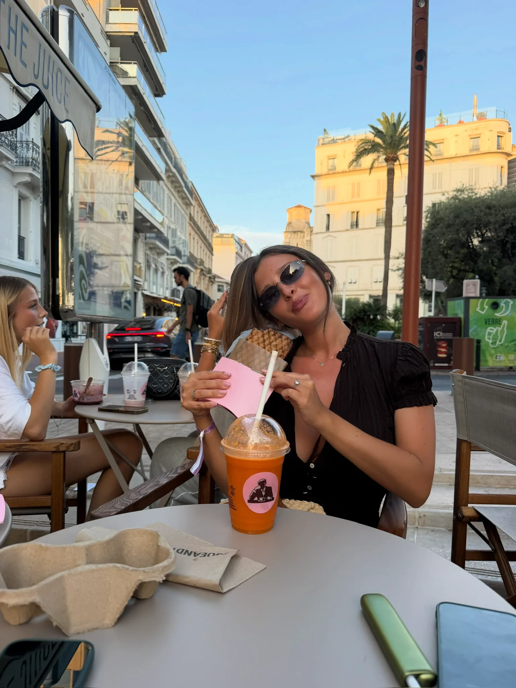
BUSINESS • INNOVATION • PEOPLE
Some things are easier to discover
over a sandwich
THE SANDWICH
Every experience adds a layer. Pick an ingredient and explore the recipe.
MOVE OR TAP TO BUILD →
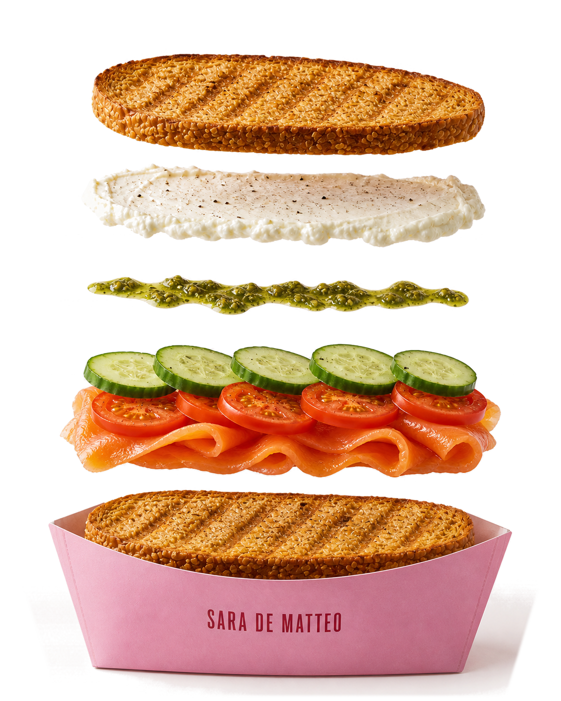
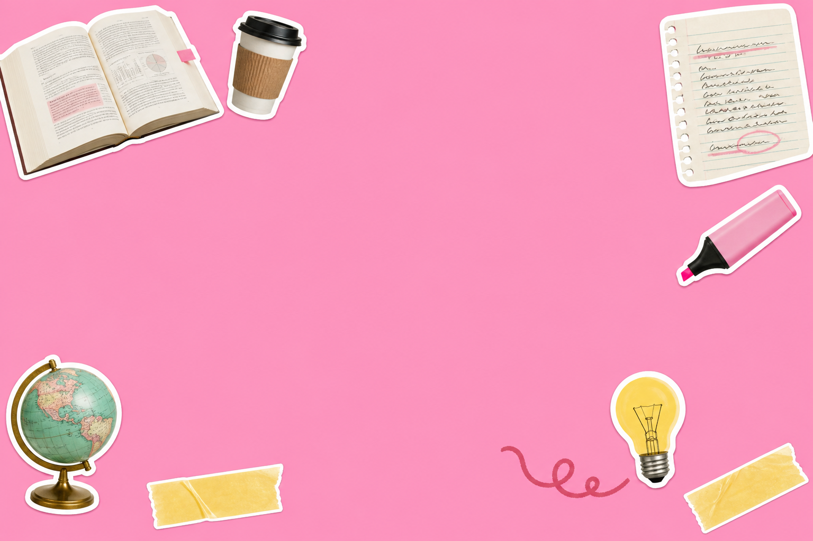
01 • THE BREAD
The foundations of my journey
Education gave me the foundations. Human connection, curiosity and new perspectives continue to shape the person I am becoming.
I started university during the COVID-19 pandemic, an unusual beginning for someone who thrives on human connection. It clarified what I wanted from work: people, relationships and ideas shared in real life.
An international master’s program introduced me to new perspectives and the startup world. Building my own project taught me to test ideas, take risks and move beyond what felt familiar.
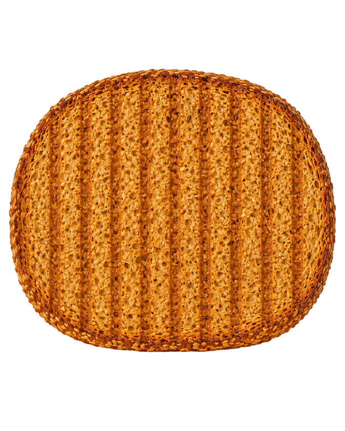
02 • THE FILLING
Different experiences.Different flavors.Different combinations.
SMARTEAT
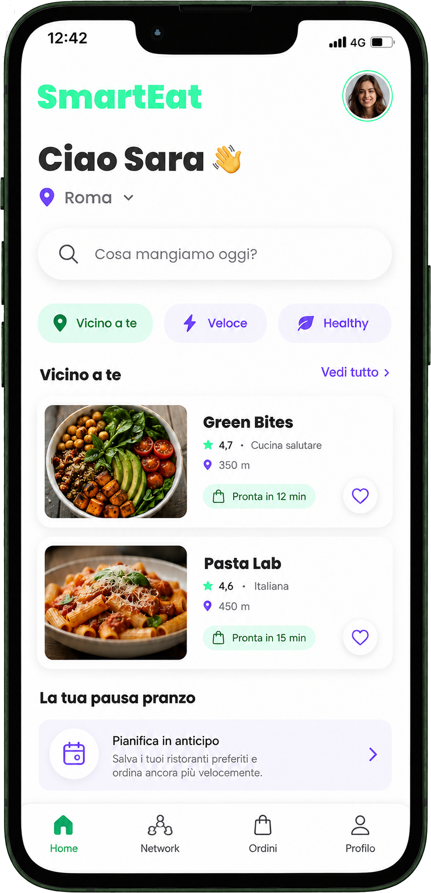
THE SPECIAL
SmartEat rethinks one of the most overlooked moments of the working day: the lunch break. A digital platform connecting workers and local restaurants, from discovering nearby places to booking, pre-ordering and paying in advance.
INGREDIENTS:
Starting from an everyday frustration and turning it into an opportunity worth exploring.
BRAND & COMMUNICATION
The concept became tangible through a bold visual identity and marketing materials designed to explain SmartEat in the time it takes to choose lunch.
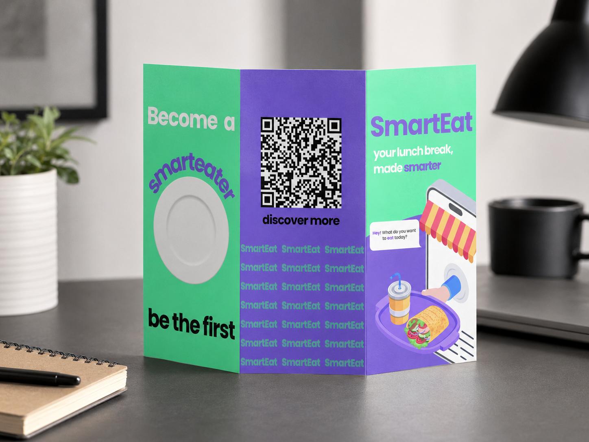
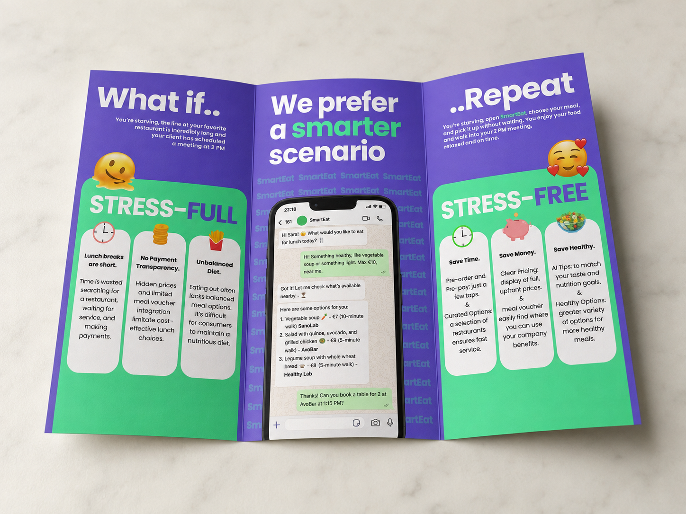
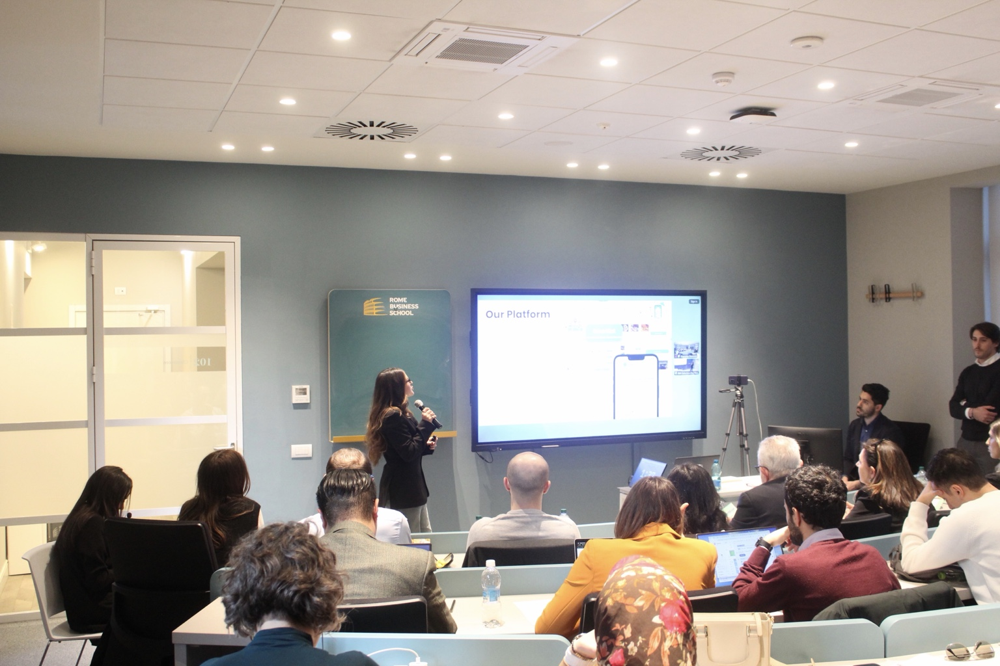
THE IDEA
SmartEat started from a simple mismatch: workers lose time searching, waiting and paying, while restaurants struggle with an intense and unpredictable lunch rush. The idea was to create a digital bridge between them by helping people discover nearby restaurants, offering personalized options, and enabling pre-orders and payments, including meal vouchers.
A stressful routine could become a smoother experience for people and a more manageable, valuable service for restaurants.
THE SMARTEATERS
SmartEat was never meant to be just another food app. The idea was to build a community of SmartEaters: people who could turn an ordinary break into an opportunity to meet colleagues, create lunch groups and discover new connections.
Not just eating. Connecting.PRO&PRO
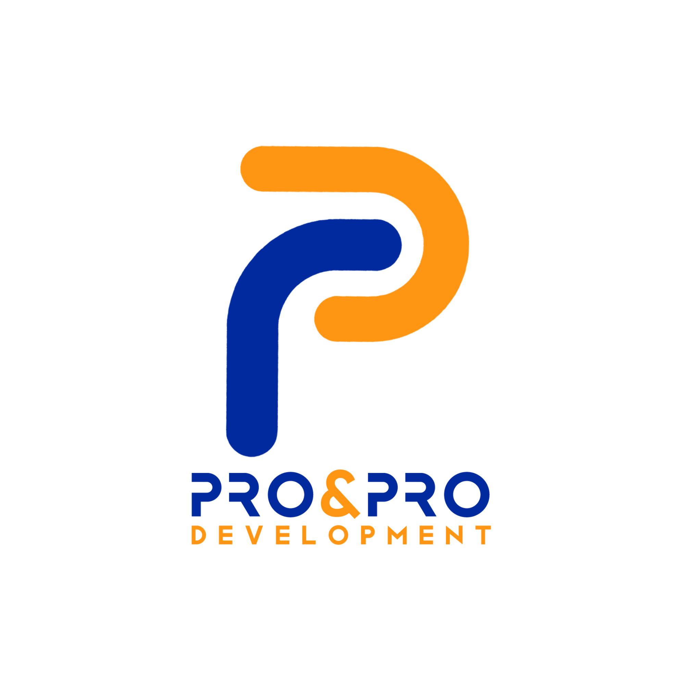
A FAMILY BUSINESS, SEEN FROM WITHIN
Pro&Pro is the industrial automation company my father built more than 25 years ago. Joining it meant stepping into a business I had always known from the outside and discovering how different it looked from within.
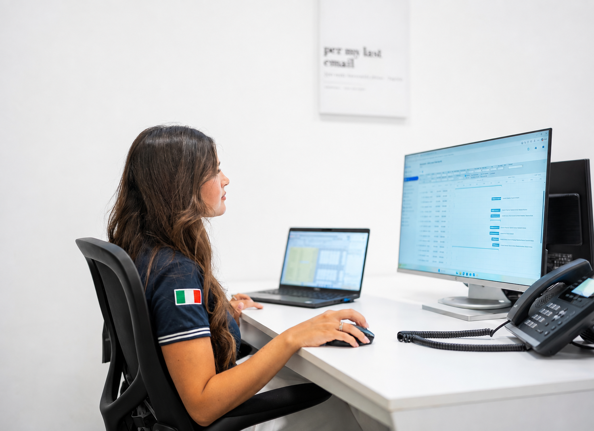
INGREDIENTS:
Turning ideas into action, coordinating moving parts and keeping the bigger picture in focus.
Listening to people, identifying opportunities and building relationships that create value.
Making complex ideas clearer, more relevant and easier to remember.
EVOLUTION 25+ YEARS, ONE IDENTITY IN MOTION
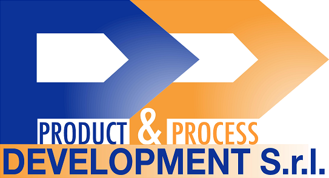
REPRESENTING CHANGE
The common thread was my passion for representing the company’s value, both as a team member and as an owner. I helped give shape and voice to a broader evolution across five areas.
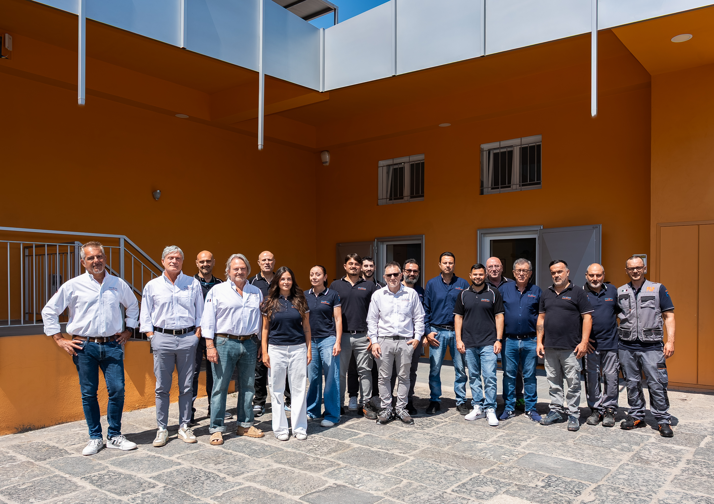
03 • THE SAUCE
The way I think, collaborate and turn ideas into something people can understand and want to be part of.
Before proposing an answer, I want to understand the people, the context and what really matters.
I like looking beyond a single task, finding connections between people, ideas and the bigger picture.
I enjoy finding the words, images and details that help people understand an idea and see its value.
I care about what comes after an idea: bringing people on board and turning intentions into something tangible.
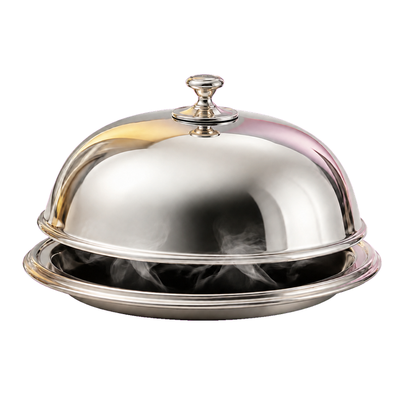
04 • THE SECRET INGREDIENT
Not on the menu yet.
I’m looking for the next experience where business, innovation and people meet, a place to contribute, keep learning and discover new flavors.
Maybe the best combo is still to come.
ONE LAST THING
If this break gave you a taste of who I am, maybe coffee can tell you the rest.
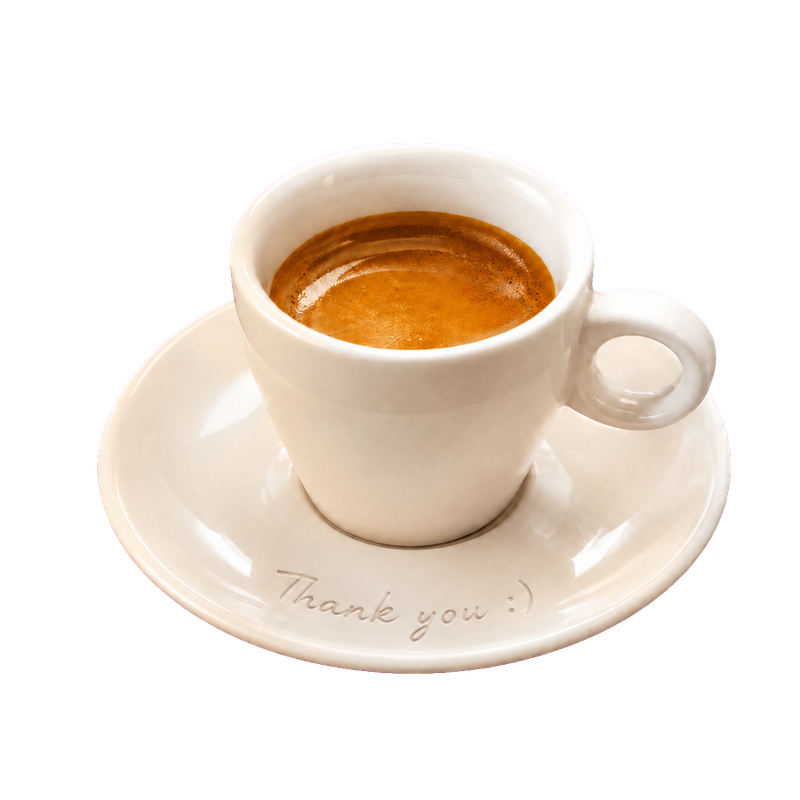